Course homeLecture image credits
Images retain their individual licenses. They do not imply author endorsement. Resized photographs retain the original license. Diagram files are unmodified and not recolored; the Week 10 slide viewport trims blank margins, with the full original available by clicking. Generic and historical examples are labeled on the slides. Source pages and licenses were checked on 27 September 2026.
Nokia 3310 phone.jpg
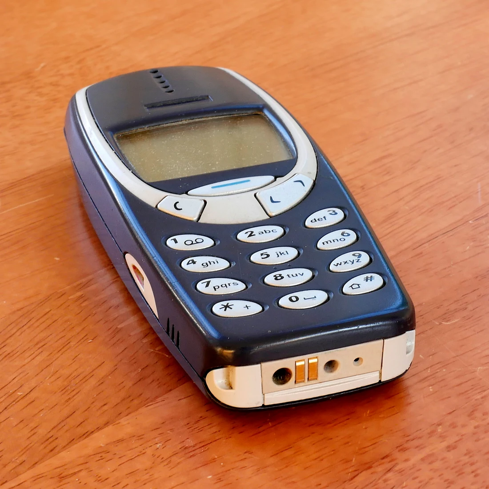
Creator: Santeri Viinamäki
License: CC BY-SA 4.0
Resized and converted to WebP; no crop or recoloring.
Source file page · Original asset · Week 01 slide
Own work
Retrieved 2026-09-27
IPhone & iPhone 3G fronts.jpg
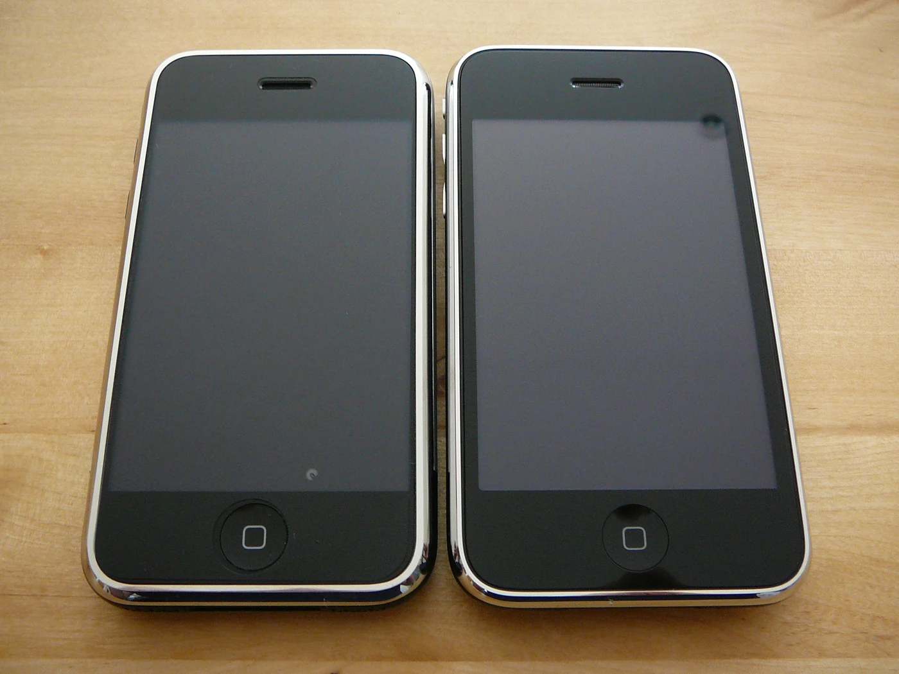
Creator: Dan Taylor from London, UK
License: CC BY 2.0
Resized and converted to WebP; no crop or recoloring.
Source file page · Original asset · Week 01 slide
iPhone & iPhone 3G (front)
Retrieved 2026-09-27
Turnstile state machine colored.svg
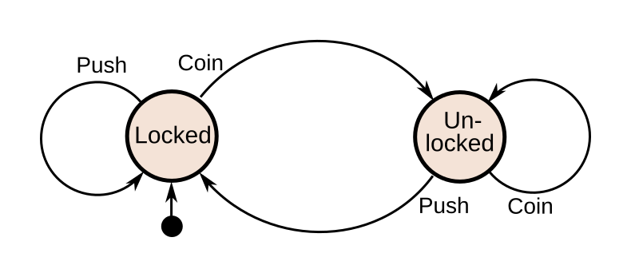
Creator: Chetvorno
License: CC0
Unmodified image; scaled for display.
Source file page · Original asset · Week 02 slide
Own work
Retrieved 2026-09-27
Paper prototype of website user interface, 2015-04-16.jpg
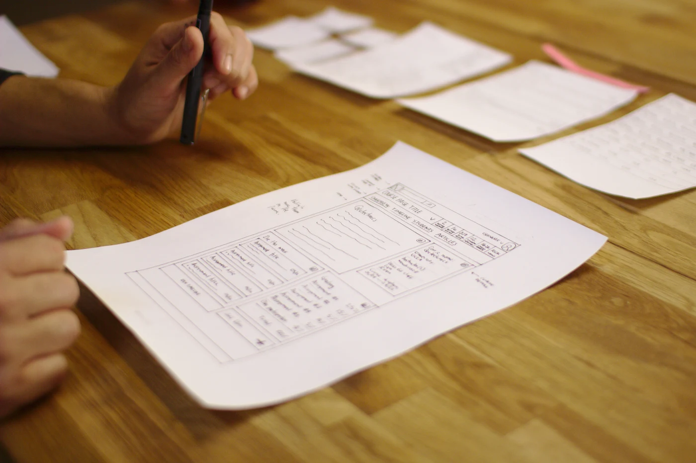
Creator: Sage Ross
License: CC BY-SA 4.0
Resized and converted to WebP; no crop or recoloring.
Source file page · Original asset · Week 03 slide
Own work
Retrieved 2026-09-27
Content-is-like-water.svg
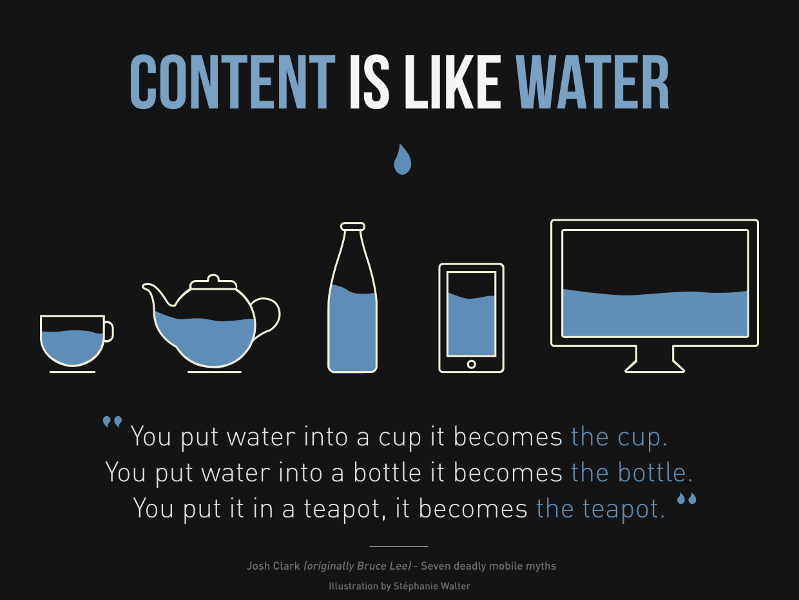
Creator: Stéphanie Walter
License: CC BY-SA 3.0
Unmodified image; scaled for display.
Source file page · Original asset · Week 04 slide
https://stephaniewalter.design/
Retrieved 2026-09-27
GUI Frame.svg
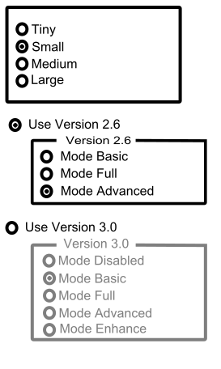
Creator: Rfc1394
License: Public domain
Unmodified image; scaled for display.
Source file page · Original asset · Week 05 slide
Own work
Retrieved 2026-09-27
EAN-13-ISBN-13.svg
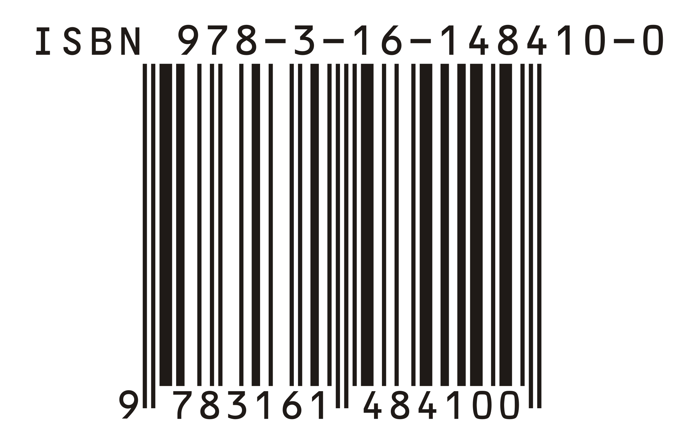
Creator: ISBN
License: Public domain
Unmodified image; scaled for display.
Source file page · Original asset · Week 06 slide
self-made using bookland 1.3
Retrieved 2026-09-27
Data stack.svg
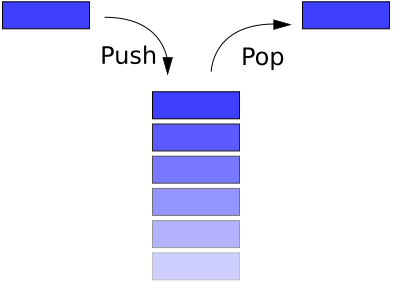
Creator: Boivie, based on Shrimp; refinements by Bobbo and Benjaminabel
License: Public domain
Unmodified image; scaled for display.
Source file page · Original asset · Week 07 slide
made in Inkscape, by myself User:Boivie. Based on Image:Stack-sv.png, originally uploaded to the Swedish Wikipedia in 2004 by sv:User:Shrimp
Retrieved 2026-09-27
Observer.svg
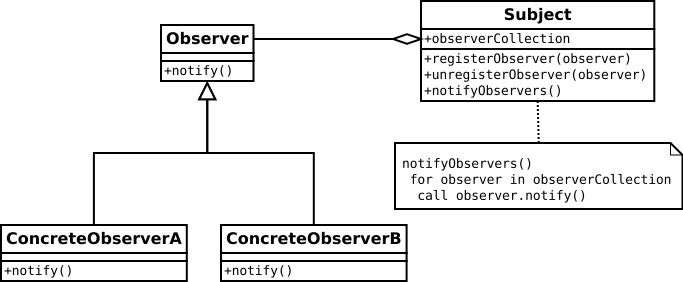
Creator: WikiSolved
License: Public domain
Unmodified image; scaled for display.
Source file page · Original asset · Week 08 slide
Own work
Retrieved 2026-09-27
Intel 512G M2 Solid State Drive.jpg
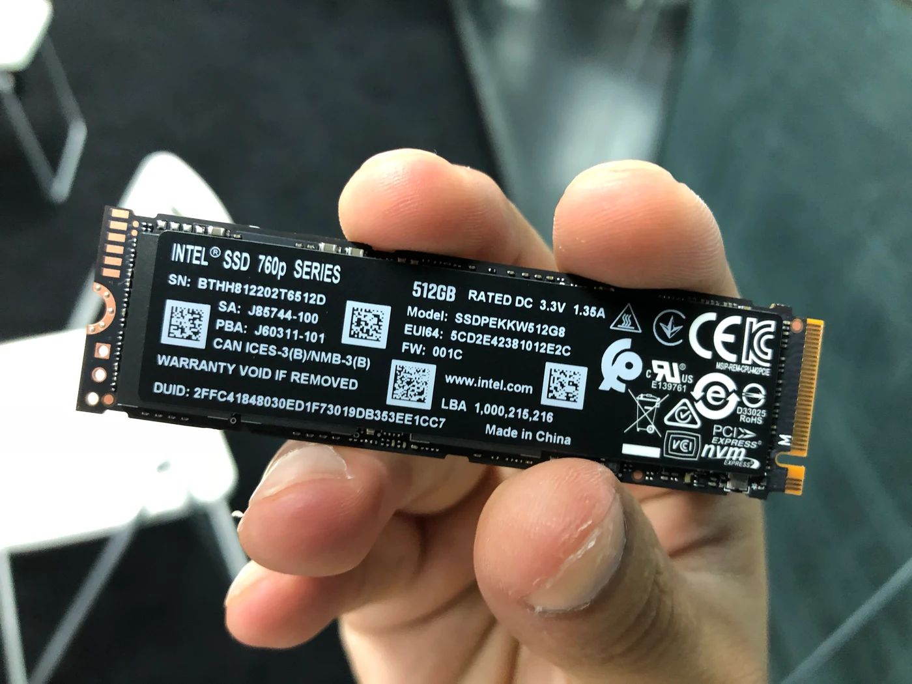
Creator: David290
License: CC BY-SA 4.0
Resized and converted to WebP; no crop or recoloring.
Source file page · Original asset · Week 09 slide
Own work
Retrieved 2026-09-27
Many to one relationship example.png
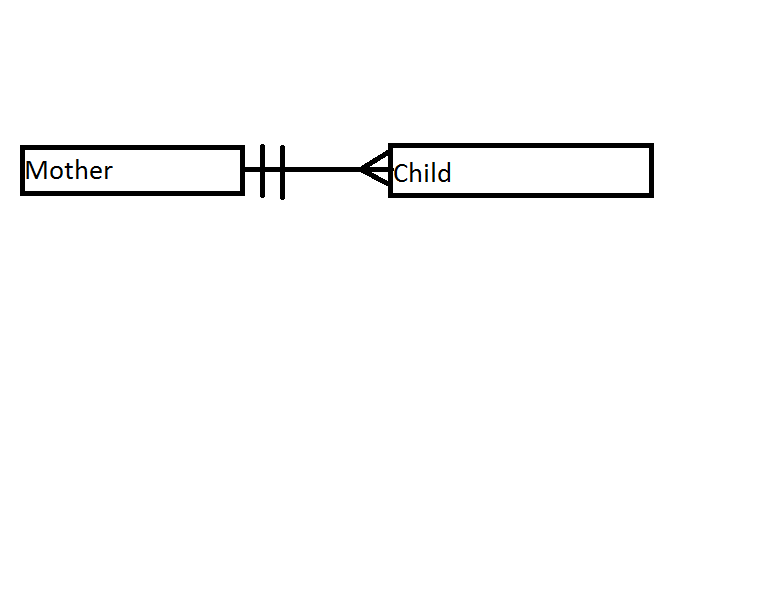
Creator: Steveisgreat
License: CC BY-SA 4.0
Unmodified image; scaled for display.
Source file page · Original asset · Week 10 slide
Own work
Retrieved 2026-09-27
Pixel-example.png
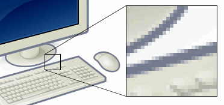
Creator: ed g2s, using a computer illustration by Gustavb
License: CC BY-SA 3.0
Unmodified image; scaled for display.
Source file page · Original asset · Week 11 slide
Example image is a rendering of Image:Personal computer, exploded 5.svg.
Retrieved 2026-09-27
Client-server model.svg
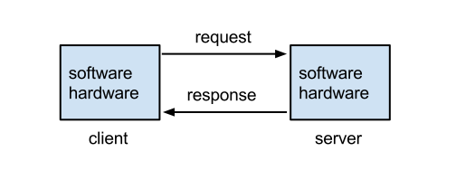
Creator: Lubaochuan
License: CC BY-SA 4.0
Unmodified image; scaled for display.
Source file page · Original asset · Week 12 slide
Own work
Retrieved 2026-09-27
Cloud computing.svg
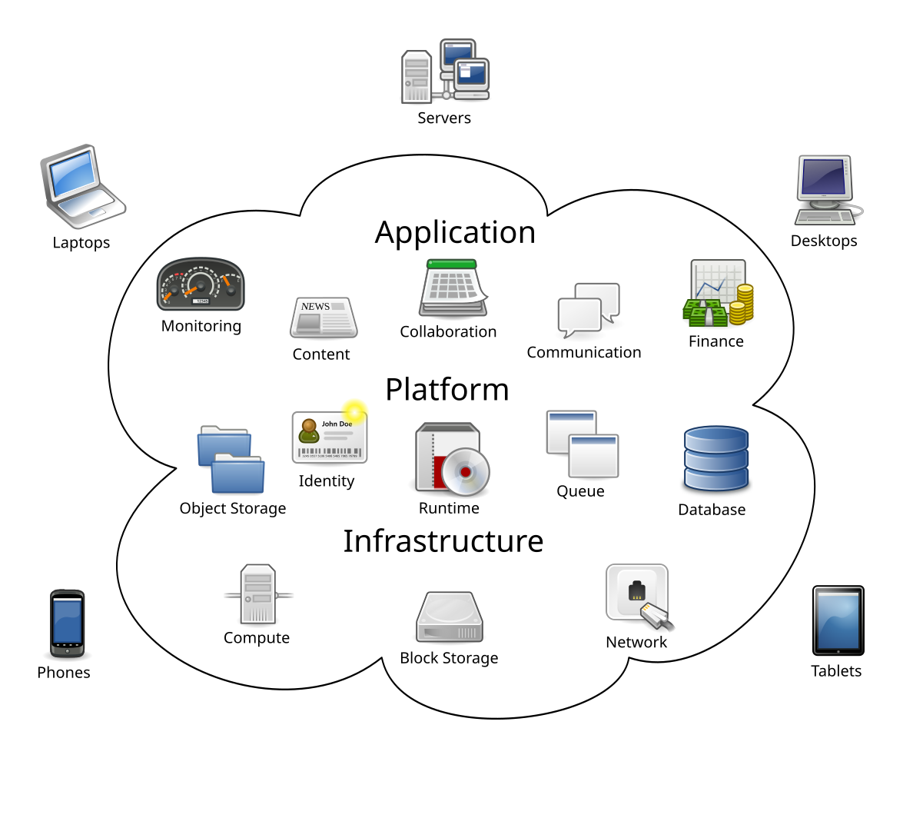
Creator: Sam Johnston
License: CC BY-SA 3.0
Unmodified image; scaled for display.
Source file page · Original asset · Week 13 slide
Created by Sam Johnston using OmniGroup's OmniGraffle and Inkscape (includes Computer.svg by Sasa Stefanovic)
This W3C-unspecified vector image was created with Inkscape .
Retrieved 2026-09-27
First Computer Bug, 1947.jpg
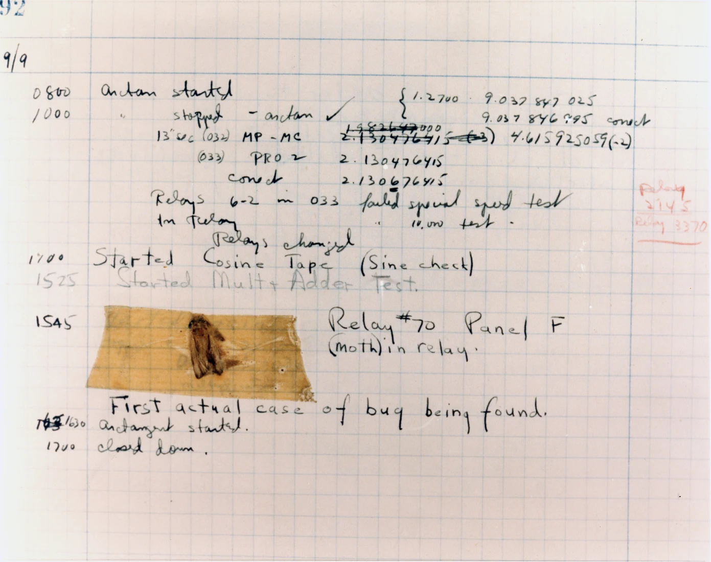
Creator: U.S. Navy / Naval Surface Warfare Center
License: Public domain
Resized and converted to WebP; no crop or recoloring.
Source file page · Original asset · Week 14 slide
U.S. Naval Historical Center Online Library Photograph NH 96566-KN The above link is no longer valid on 13.04.2017, the image available here.
Retrieved 2026-09-27
Devops-toolchain.svg
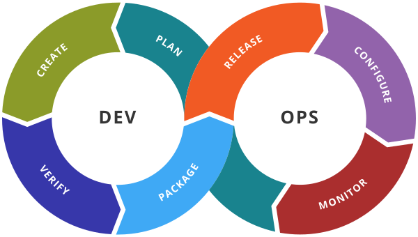
Creator: Kharnagy
License: CC BY-SA 4.0
Unmodified image; scaled for display.
Source file page · Original asset · Week 15 slide
Own work
Retrieved 2026-09-27